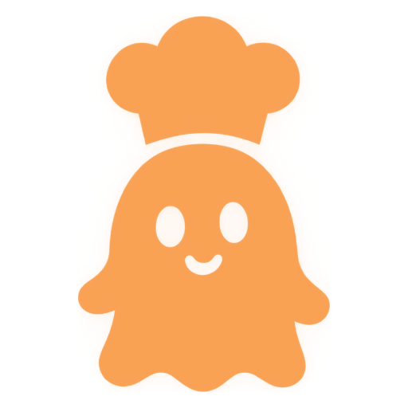
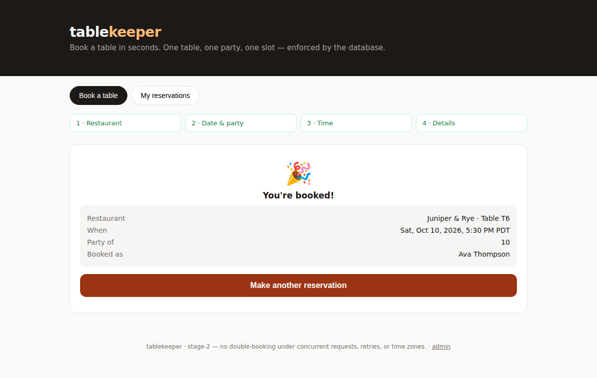
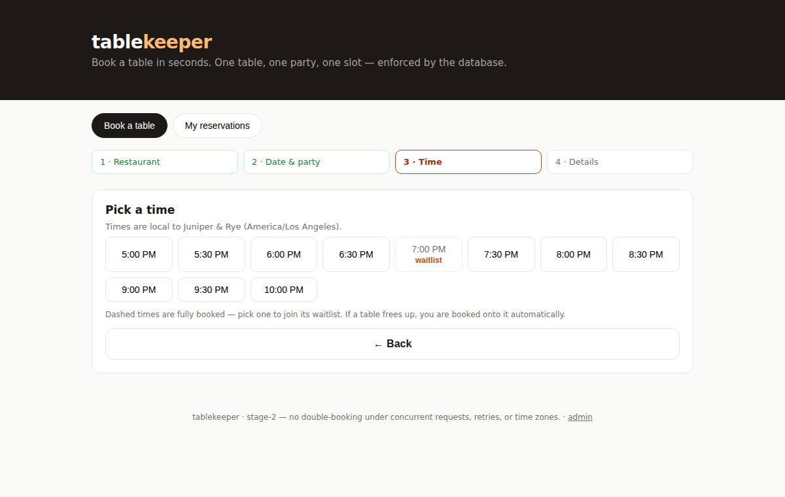
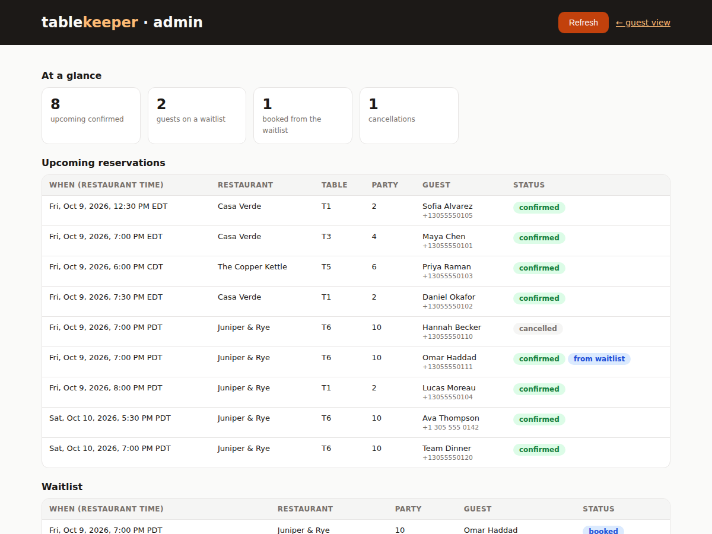

Three AI agents built a restaurant booking app. A table never goes to two parties.

Guests browse restaurants, check a time, book, and cancel. The catch: it has to hold when two people click at the same second, when a request is sent twice, and when restaurants sit in different time zones.
And the app isn't really the entry. The team that built it is.
| Agent | Does | Is not allowed to |
|---|---|---|
| Planner | Splits the assignment into tasks and writes how anyone could tell each one is finished | Write code |
| Builder | Writes the code and hands each task over with the commands to check it | Mark its own work done |
| Checker | Tests the work, tries to break it, reports exactly what failed | Fix anything itself |
So "done" means someone else actually saw it work.
The job descriptions never mention restaurants, so the same three can be pointed at a different assignment. A person hands over the assignment and steers between steps; the agents plan, build and check.

Pick a time. Full times offer the waitlist. The ticket on the right fills in as you go.

Admin: a cancellation, and the guest moved up from the waitlist onto that table.
| What we removed | Got the table | |
|---|---|---|
| Nothing | 1 | held |
| The lock | 1 | the database rule still holds |
| The database rule | 1 | the lock still holds |
| Both | 4 | in our run: double-booked, and the test caught it |
Run 1's Checker approved broken work. An audit caught it, and its instructions were rewritten: prove every safety test can fail. In run 2, an independent Checker found 7 problems. All were fixed before it passed.
github.com/yasmeen/hackathon-dark-factory